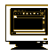
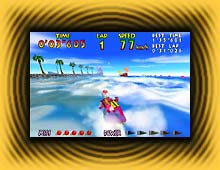
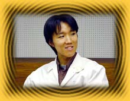

|  |
| ＮＯＭ： | プログラマーとひとくちにいっても、いろんなタイプのプログラマーがいらっしゃるんでしょうね？ |
|
| 太田： | ボクの場合は、ゲームデザイナーに近い立場のプログラマーとでもいうんでしょうか。ボクが作った実験的なプログラムをネタに、ゲームの企画が立ち上がって、カタチになっていく……というカンジです。 たとえば、揺れる波を表現できるプログラムを作ったときには、そこからゲームのアイデアが生まれ、『ウェーブレース６４』というゲームができました。また、画面を早く表示していくプログラムを作ったときには、コレを使って『Ｆ−ＺＥＲＯ』の続編を作ろうという話になり、『Ｆ−ＺＥＲＯ Ｘ』が生まれたんです。 という発案型のプログラマーもいれば、「この絵を動かして」というオーダーにこたえていくプログラマーもいます。たとえば『Ｆ−ＺＥＲＯ Ｘ』の開発チームには約５人のプログラマーがいて、ゲームのシステム部分をプログラミングするひと、背景を出すひと、敵を動かすひとといった具合に仕事が細分化されていました。それをメインプログラマーがまとめていくというカンジです。 |
|
| ＮＯＭ： | 太田さんはどんな道をたどって、現在の仕事にたどりついたんですか？ |
|
| 太田： | もともと、自分でものを作ることが好きなんです。子供のころ、オリガミにはまったのが最初かな。 あるとき、パソコンというものを知って、自分でプログラムを作ってみたくなったんです。図書館で独学で勉強しましたね。大学生のときには、作ったプログラムを雑誌に投稿したりしてました。 大学は工学部に進みましたが、入ったのは経営学科で、コンピュータのことは勉強しませんでした。入学当時はまだその後の進路を決めていなかったので、オールマイティっぽい学科に入ったんですね。そのうちゲームに興味を持って、任天堂と電通が開催したゲームセミナーに参加しました。そこでは自分の考えたパズルゲームの企画がボツになってしまったんですが、あきらめきれずにひとりでプログラムした結果、賞をいただいたんですよ。それが任天堂を受けるきっかけになったのかな。 |
|
| ＮＯＭ： | ゲームプログラマーが身につけておくべきスキルは、どういったものでしょう？ |
|
| 太田： | とりあえずＣ言語が使えればオーケーです。あとは……知識的なことはとくにないのでは。コンピュータにとても詳しいひとはプログラマーというよりネットワーク管理者に向いているのではないでしょうか。数学的なことに関しては、高校までで習ったことの応用になるでしょうね。ゲームプログラムを作るときには教科書がありませんから、自分の頭だけが頼りなんです。 あと、絶対に必要なのがセンスです。ゲームのプログラムはひらめき勝負ですからね。プログラム以外にもいろんなものを見て、発想力を身につけることです。仕様をみて、臨機応変にやっていく力も必要でしょう。 ゲームのプログラムって、たとえばワープロなどのプログラムを作るよりもはるかに難しいんです。ワープロって、ある程度カタチがあるでしょう。ひらがなを漢字に変換する方法などが、もう論理的に決まっている。でも、ゲームは毎回やることが違いますし、波を揺らす方法なんて決まってないですからね。だからセンスが必要なんです。 |
|